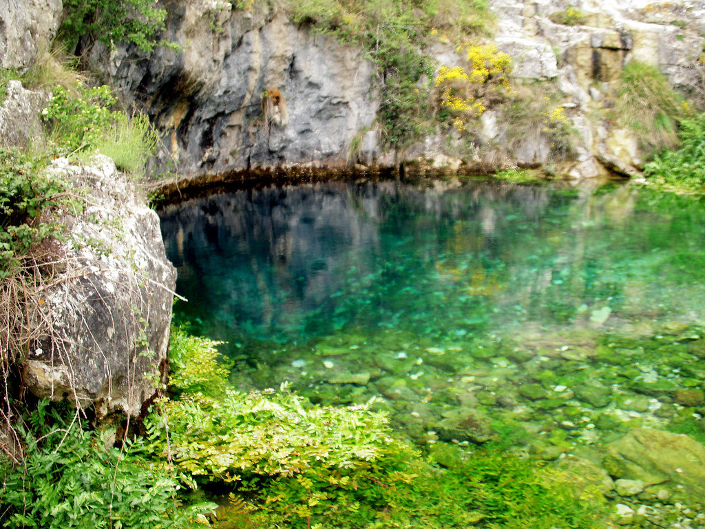
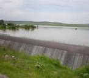

Manantiales de Agua Azul

Pequeños manantiales de agua cristalina en las afueras del municipio. Perfecto para un paseo tranquilo y contacto con la naturaleza.
Río Verde
El Río Verde es un lugar natural en Cuquío ideal para relajarse y disfrutar de sus aguas termales y paisajes escénicos. Es perfecto para nadar, acampar, hacer senderismo y disfrutar de la tranquilidad de la naturaleza.
Parque y Presa Los Gigantes

El Parque Los Gigantes se encuentra junto a la Presa Los Gigantes, ubicada a aproximadamente 2.7 kilómetros al suroeste de la cabecera municipal de Cuquío, Jalisco. Este parque ofrece áreas verdes con andadores, mesas y servicios sanitarios, convirtiéndolo en un lugar ideal para convivir en familia o con amigos. La presa es un atractivo natural que complementa la belleza del entorno, permitiendo actividades como paseos y días de campo.